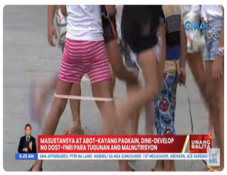
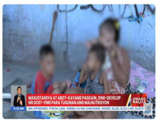

Sa pagtatapos ng aralin, ang mga mag-aaral ay inaasahang :
Panuto: Suriin ang nilalaman .ng balita at ibigay ang saloobin sa bawat larawan. Sagutin ang gabay na tanong sa
ibaba.

Gabay na tanong:
1. Ano ang sanhi ng pagkakaroon ng suliranin ng ating bansa?
2. Anong proyekto ang maaring ilunsad ng pamahalaan upang maresolba ang nasabing isyu?
3. Bakit kaya nagkakaroon ng suliranin?
4.1 Pagbubuod at Pag-Uugnay –ugnay ng Impormasyon
Sa panahon ngayon, napakaraming paraan upang mangalap ng mga impormasyon. Nariyan ang internet, balita sa radyo at telebisyon, pakikinig sa mga palihan at iba pa. Ngunit sa dami ng mga impormasyong nakakalap paano maiuugnay ang mga ito at paano ito mabubuod?
Pinagsama-sama ang mga nakalap na impormasyon sa maayos na paraan upang mailahad ang mga datos na may kaugnayan sa bawat isa. Hindi kinakailangang paligoy-ligoy Ang mga kaisipan, direktang inilahad ang mga impormasyon at ito’y sinisikap na gawing maikli lamang. May iba’t ibang paraan ng pagbubuod upang mapag-ugnay ang mga impormasyon, datos at ideya.
Ano ang Buod?
Mga Hakbangin sa Pagbubuod
• Basahin ang teksto, pakinggan ang balita o panuorin ang ibubuod
• Tukuyin ang paksa ng ibubuod mula sa mga inihaing mga impormasyon, magtala ng mga mahahalagang impormasyon o detalye mula sa binabasa,
pinapakinggan o pinapanuod.
• Pag-ugnay-ugnayin ang mga impormasyong nakalap upang mabuo ang pinakapunto o paksa
• Isulat ang buod. Siguraduhing nasa lohikal at kronolohikal na ayos ito.
• Huwag maglagay ng sariling impormasyon, maaari itong makagulo sa mga detalyeng inilalahad
• Simula, Gitna at Wakas
1. PRESI / PRECIS - Ayon kina Castillo, Et Al. sa librong Pagbasa at Pagtungo sa Pananaliksik, 2012 na ang Presi/ Precis ay hindi pagpapahayag ng sariling interpretasyon sa binasa, bagkus ito ay eksatong replika ng orihinal na akda sa pinaikling bersyon na naipahayag nang kumpleto ang argumento sa sukat o habang sangkapat (1/4) o sanlima (1/5).
2. LAGOM O SINOPSIS -Pinaikli ang pangunahing punto ng isang babasahin, karaniwan
itong ginagamit bilang pabalat sa mga nobela o di kaya ay naglalaan ng isa o dalawang pahina sa likod na bahagi ng nobela.
Hakbang sa pagsulat ng lagom o sinopsis
• Basahing mabuti ang bawat kabanata ng nobela.
• Gumawa ng balangkas sa bawat kabanata, isulat ang mahahalagang impormasyon sa mga tauhan at mga pangyayari.
• Gumawa ng buod o storyline na hindi lalagpas sa dalawang pangungusap. Simulan ang pagsulat ng buod sa mga pangunahing tauhan at ang kanilang mga pinagdaanan. Maaaring maglahad ng maikling diyalogo. Inahalad kung
bakit kinakaharap ng mga pangunahing tauhan ang mga suliranin,
3. SINTESIS - Pinagsama-sama ang mga impormasyong nakalap mula sa mga tao o manunulat, libro,
o pananaliksik upang makabuo ng isang malinaw na pagbubuod o babasahin na mayroong buo o kumpletong datos. Mahalaga ang organisasyon ng mga datos at ideya sa sintesis, maaaring manggaling ang mga ito sa mga batis na impormasyon.
4.HAWIG -Tinatawag na paraphrase sa Ingles ang hawig. Inilalahad sa sariling pangungusap ang mga impormasyong nakalap mula sa ibang manunulat. Di tulas ng buod, mas detalyado ang hawig sapagkat isinasama sa pagsulat kung kanino nanggaling ang pahayag.
Halimbawa:
A. “Ang hindi marunong magmahal sa sariling wika ay mas masahol pa sa hayop at malansang isda”- Dr. Jose P. Rizal.
Isusulat ito sa HAWIG sa ganitong paraan:
B Ayon kay Dr. Jose P. Rizal, ang hindi marunong magmahal sa sariling wika ay mas masahol pa sa hayop at malansang isda.
Nawala ang mga panipi (“”) at pinalitan ito ang katagang “Ayon kay”.
C. Hindi lamang Ayon kay ang maaaring gamitn, nariyan din ang sang-ayon kay, sinabi ni, nasusulat sa at iba pang mga hudyat na nagpapahiwatig ng sinaad, iniisip o salobin ng iba.
5. ABSTRAK- Buod ng isang artikulo, ulat o pag-aaral na inilalagay bago ang introduksyon. Nilalaman nito ang mga impormasyong nakalap mula sa pag-aaral o pananaliksik.
Uri ng Abstrak;
A. Deskriptibong Abstrak-Mababasa rito ang kaligiran,layunin, at tuon ng papel. Inilalarawan ng deskriptibong abstrak ang pangunahing ideya ng artikulo, ulat o pag-aaral.
B. Impormatibong Abstrak- Ipinapahayag sa mga mambabasa ang mga mahahalagang ideya ng artikulo, ulat o pag-aaral, karaniwang maikli ang ganitong uri ng abstrak at binubuo itong kaligiran, layunin, metodolohiya, resulta at rekomendasyon ng mananaliksik.
Mga Hakbang sa Pagsulat ng Abstrak
Matapos magbasa, isulat ang draft o burador
Halimbawa ng Abstrak:
ABSTRAK
Pamagat ng Tisis: Katanggapan ng Mungkahing
Baybaying PUP ng mga Guro sa mga
Piling Bayan sa Lalawigan ng Ilocos,
Norte, Cebu at Dinagat Islands, Taong
Panuruan 2015-2016
Dulong Pananaliksik: Kwantitabong Pananaliksik
Mananaliksik: Risel Ella Joyce F. Arao
Ana Maria Janel A. Isaguirre
Joeffrey M. Sacristan
Digri: Batsilyer sa Sekondaryang Edukasyon
Medyor sa Filipino
Institusyon: Politeknikong Unibersidad ng Pilipinas
Taong: 2015-2016
Tagapayo: Dr. Jennifor L. Aguilar
Nakasalalay ang pagbalik at tuluyang pagkalaho ng sistema ng pagsulat ng mga Pilipino na tinatawag na Baybayin. Naniniwala ang mananaliksik na makatutulong sa aspektong kultura, edukasyon at ekonomoiya hinggil sa katanggapan ng mga guro sa Baybaying PUP upang gamitin sa pag tuturo.
Tinugon ng pag-aaral na ito ang mga sumusunod na suliranin:
1. Paano tinatanggap ang Paggamit ng Baybayin ayon sa sumusunod na aspekto:
1.1 Kultura;
1.2 Edukasyon;
1.3 Ekonomiya;
2. Paano tinatanggap ng mga guro ang Mungkahing Pagbabago sa Baybayin ayon sa mga sumusunod:
2.1 Rizaleo;
2.2 C, Ñ at Q;
2.3 Bantas;
2.4 Pamilang;
3. Ano-ano ang mga suhestiyon ng mga guro sa Baybaying PUP ?
Gumagamit ang mananaliksik ng pamamaraang palarawan at ng instrumentong talatanungan na pinapasagutan sa mga respondente ng pag-aaral hinggil sa mga pagtanggap at paggamit ng baybaying PUP sa aspektong kultura,edukasyon at ekonomiya. Sinura at binigyang interpretasyon ang mga katugunan ng mga respondente na naging batayan na natuklasan sa pananaliksik na ito.
Natuklasan ang katanggapan sa paggamit ng baybaying PUP ayon saaspektong kultura, edukasyon at ekonomiya.Nagkaroon ng mga kongklusyon ang mga mananaliksik patungkol sa baybaying PUP.
URI NG PAGSULAT AYON SA ANYO
Ito ay sumusunod na pamantayan ng pagsulat. Layunin ng Pormal na Pagsulat ang makapaglahad ng mga ideya sa paraang madaling maunawaan ng mgamambabasa. Nangangailangan ang gawain ng manunulat upang maayos at malinaw na mailahad ang mga impormasyon.
Hindi ito sumusunod sa pamantayan ng pagsulat at hindi na nangangailangan ng mabusising pag-aaral at pananaliksik. Nilalaman ng di-pormal na pagsulat ang karanasan, opinyon o pananaw ng manunulat
ukol sa paksa.
URI NG PAGSULAT AYON SA LAYON
Maraming ideya, paksa o karanasan ang maaaring isulat nang may iba’t ibang layunin. Ang iba ay naglalayong magpabatid, mayroon namang manlibang at mayroon ding nanghihikayat. Narito ang limang uri ng pagsulat ayon sa layunin.
halimbawa nito ay mga dagli, maikling kwento, nobela tula at marami pang iba.
HAKBANGIN SA PAGSULAT
Sa ngayon, napakadaling mangalap ng mga impormasyong dahil mayroong kompyuter at internet na nagsisilbing silid-aklatan. Pinadali na ring pag-ugnay-ugnayin ang mga impormasyon upang makasulat ng panibagong kaalaman. Ngunit ano ano ang mga hakbang upang makabuo o makasulat ng panibagong kaalaman?
Hakbangin ng pagsusulat ayon kina Carpio, Et. Al, Komunikasyon sa Akademikong Filipino, 2012:
PAGBUO NG SARILING PAGSUSURI BATAY SA IMPORMASYON
Nilalayon ng pagsulat na makapaglahad ng impormasyon, magbahagi ng katotohanan at kaalaman na mula o hango sa isang tiyak na sanggunian. Ito rin ay isang paraan upang maipahayag ng isang tao ang kaniyang iniisip sa pamamagitan ng mga simbolo. Kahit sino ay maaaring magsulat ngunit kailangan munang alamin kung ano-ano ang mga dapat malaman bago makapagsulat ng isang akda.
Pamantayan sa pagsusuri sa halaga o kaugnayan ng mga ideya sa babasahing teksto:
1. Lohikal bang nakaayos ang mga ideya?
2. May kailangang idagdag o alisin sa mga impormasyon o sapat na ang mga ito?
3. Nakapupukaw na ng atensiyon ng mambabasa?
4. May mga detalye ba ng atensiyon ng mambabasa?
5. May mga detalye bang walang kaugnayan?
6. Mapagtibay ba ng mga detalyenf inilahad ang paglalahat o generalization?
7. Kapaki-pakinabang ba ang mga ideya sa mga mambabasa?
8. Ano ang kahinaan ng mga puntong inilahad at paano mo ito mapagtitibay?
9. Katanggap-katanggap ba ang mga salitang ginamit?
10. Sapat na ba ang mga impormasyon o detalyeng isinulat ?
11. May mga nagsasalungatan bang mga ideya sa akda?
Pagsusuri Kung Balido ang Pahayag
Madalas ay sa mga aklat, pahayagan o internet kumukuha ng mga impormasyon. Ang mga nababasang ito ay pinaghalong-halong mga datos mula sa ibat’t ibang batis ng impormasyon at opinyon ng mga manunulat na maaaring balido o di balido.
Narito ang ilang mga pamamaraan upang matukoy kung opinyon ang isang pahayag:
• Gumagamit ng mga salitang naghuhudyat ng iniisip o g saloobin ang mga manunulat tulad ng; sa aking palagay, sa aking paniniwala, sa ganang akin, sa tingin ko at maraming pang iba.
• Gumagamit ng mga salitang naghuhudyat ng opinyon o palagay halimbawa: siguro, parang, tila, at iba pa.
Batay sa aklat nin Castillo, Et. Al. na Pagbasa at Pagsulat Tungo sa Pananaliksik, (2012) ang mga sumusunod ay paraan upang malaman kung balido ang mga pahayag
Pagbabasa ng mga Grap at Talahanayan
Isang mahalagang bahagi ng paglalahad ng mga datos ang paggamit ng grap (graph) at talahanayan upang malinaw na maipakita ang mga datos. Ang grap at talahanayan ay mga dayagram na nagpapakita ng relasyon sa pagitan ng mga bilang o halaga.
Ginagamit ang mga grap at talahanayan upang maipakita sa biswal na paraan ang mga nakalap na datos. Ito ang pinakamadaling gamitin upang ipakita at maikumpara ang mga numero. Gumagamit ng guhit, larawan o hugis sa pagpapakita mng relatibong laki ng mga numero.
Pagbasa ng Grap
Pagbasa ng Talahanayan
Karaniwan ding ginagamit ang mga talahanayan sa sulating pananaliksik. Binubuo ito ng mga kolum na kinapapalooban ngmga impormasyon. Pamilang ang karaniwang inilalagay ng datos sa mga talahanayan.
Narito ang paraan sa pagbasa ng talahanayan.
Panuto. Basahin at unawain mabuti ang bawat tanong. Piliin ang TAMA kung ang pahayag ay wasto at MALI kung ang pahayag ay hindi wasto.
1. Ang talahanayan ay binubuo ng bawat kolum na kinapapalooban ng mga impormasyon
2. Ang sintesis ay tinatawag na paraphrase sa Ingles.
3. Ang pagpili sa paksa, pangangalap ng impormasyon, pagsusuri ng mga nakalap na impormasyon, pagsulat, pag-eedit at pagrerebisa ay nabibilang sa pagbuo ng sariling pagsusuri.
4. Ang preci ay kabilang sa hakbangin ng pagbubuod kung saan hindi kinakailangan ng sariling interpretasyon sa binabasa bagkus eksaktong replika lamang ng orihinal na akda sa pinaikling bersyon.
5. Ang hawig ay kinikilala bilang isang paraphrase.
6. Ang malikhaing pagsulat ay kinakailangan ng malawak na imahinasyon upang makapagsulat ng isang akda. Kabilang dito ang pagsulat ng maikling kwento, tula, alamat at iba pa.
7. Ang sulating pampropesyonal ay gumagamit ng jargon o mga salitang ginagamit ng tao batay sa kanilang propesyon.
8. Ang pagsusuri sa nakalap na impormasyon ay hakbangin sa pagsulat na nasa ikalawang hakbang sapgakat binabasa at inuunawa ang mga nakalap na impormasyon.
9. Ang pag-eedit at pagrerebisa ay huling hakbang sa pagsulat na kinakailangan basahin at suriin ng dalubhasa sa gramatika upang matiyak na may kahusayan ang akdang kanilang isinulat.
10. Ang sulating jornalistik ay ginagamitan ng teknikal na salita upang mabigyang kahulugan ang mga teknikal na gawain.
Panuto: Sagutan ang Gawain sa Libro ng Kontekstwalisadong Komunikasyon sa Filipino Pahina 76 hanggang 79 at ipasa ito bilang kahingian ng asignatura
Panuto. Basahiin at unawain ang bawat tanong, Piliin ang letra ng tamang sagot..
d. Modelo ni Schramm
a. Malikhaing Pagsulat
b. Sulating Jornalistik
c. Sulating Pampropesyunal
d. Malikhaing Pagsulat
10. Hakbangin sa pagsulat na may kaugnayan sa pagkuha ng datos tungkol sa paksang napili upang may maibahagi sa mga mambabasa.
a. Pagpili ng Paksa
b. Pangangalap ng Datos
c. Pagsusuri ng mga nakalap na datos
d. Pagsulat
11. Hakbangin sa pagsulat na kinakailangan pa itong basahin at suriin ng manunulat o ipasuri sa mga
Dalubhasa sa gramatika o mga manunulat rin mismo upang matiyak ang sumulat sa kahusayan ng
akda.
a. Pag-eedit at Pagrerebisa
b. Pagpili ng Paksa
c. Pagsusuri ng mga nakalap na Datos
d. Pangangalap ng Datos
12. Binubuo ito ng mga kolum na kinapapalooban ng mga impormasyon.
a. Grap
b. Chart
c. Talahanayan
d. Pananaliksik
13. Buod ng isang artikulo, ulat o pag-aaral na inilalagay bago ang introduksyon. Nilalaman nito ang mga impormasyong nakalap mula sa pag-aaral o pananaliksik
a. Preci
b. Buod
c. Lagom
d. Abstrak
14. Uri ng abstrak na ipinapahayag sa mga mambabasa ang mga mahahalagang ideya ng artikulo, ulat o pag-aaral, karaniwang maikli ang ganitong uri ng abstrak at binubuo itong kaligiran, layunin, metodolohiya, resulta at rekomendasyon ng mananaliksik
a. Deskriptibong Abstrack
b. Impormatibong Abstrak
c. Pormal na Pagsulat
d. Di-Pormal na Pagsulat
15. Uri ng p-Pagsulat ayon sa Layon na hindi sumusunod sa pamantayan ng pagsulat at hindi na nangangailangan ng mabusising pag-aaral at pananaliksik. Nilalaman ng di-pormal na pagsulat ang karanasan, opinyon o pananaw ng manunulat
ukol sa paksa.
a. Deskriptibong Abstrak
b. Impormatibong Abstrak
c. Pormal na Pagsulat
d. Di-Pormal na Pagsulat
16. Ito ay Uri ng pagsulat ayon sa layon, alin ang hindi nabibilang.
a. Pagpili ng Paksa
b. Malikhaing Pagsulat
c. Pang-akademikong Sulatin
d. Sulating Pampropesyunal
17. Unang hakbangin sa Pagsulat maaring makakalap mula sa radyo, telebisyon maging sa sosyal midya. Maaring mula sa karanasan at obserbasyon upang magkaroon ng batayan sa pagsisimula ng pagsulat
a. Pag-eedit at Pagrerebisa
b. Pagsusuri ng Impormasyon
c. Pangangalap ng Impormasyon
d. Pagpili ng Paksa
18. Ang mga sumusunod ay paraan upang malaman na balido ang mga pahayag, alin ang hindi nabibilang dito.
a. Maaaring maberipika ang pinaghanguan ng mga impormasyon sa pamamagitan ng mga impormasyon sa pamamagitan ng bibliograpiya.
b. Hindi na kailan pang basahing muli sapagkat may magwawasto na ng bawat pahayag
c. Kilalanin kung sino ang mga manunulat d. Kumuha lamang ng mga datos sa mga mapagkakatiwalaang mga batis ng impor-
masyon tulad ng aklat, pananaliksik, balita sa mga pahayagan, telebisyon at radyo, magasin at dokumentaryo
19. Alin sa mga sumusunod ang unang hakbangin sa pagbubuod.
a. Pag-ugnay-ugnayin ang mga impormasyong nakalap upang mabuo ang pinakapunto o paksa
b. Basahin ang teksto, pakinggan ang balita o panuorin ang ibubuod
c. Isulat ang buod. Siguraduhing nasa lohikal at kronolohikal na ayos ito.
d. Huwag maglagay ng sariling impormasyon, maaari itong makagulo sa mga detalyeng inilalahad
20. Pinagsama-sama ang mga impormasyong nakalap mula sa mga tao o manunulat, libro,
o pananaliksik upang makabuo ng isang malinaw na pagbubuod o babasahin na mayroong buo o kumpletong datos. Mahalaga ang organisasyon ng mga datos at ideya sa sintesis, maaaring manggaling ang mga ito sa mga batis na impormasyon.
pa.
a. Sintesis
b. Buod
c. Lagom
d. Preci
Instruction. Basahin at unawain ang tanong, piliin ang letra ng tamang sagot.
1. Ang ikatlong hakbangin sa pagsulat ay ang pagpili ng paksa
2. Sa pag-eedit at pagrerebisa higit na kinakailangan ng dalubhasa sa gramatika upang makatiyak sa kahusayan ng may-akda
3. Ang pormal na pagsulat ay may sinusunod na gabay o pamantayan upang maayos na mailahad at madaling maunawaan ng mambabasa.
a. Tama
b. Mali
4. Ang pagsulay ay isang makrong kasanayan na pagsasalin sa papel ng mga nabuong salita, simbolo at ilustrasyon ng isang tao.
a. Tama
b. Mali
5. Ang preci ay pinaikli ang pangunahing punto ng isang babasahin, karaniwan
itong ginagamit bilang pabalat sa mga nobela o di kaya ay naglalaan ng isa o dalawang pahina sa likod na bahagi ng nobela.
a. Tama
b. Mali
ANALYSIS, APPLICATION, AND EXPLORATION | EVALUATION | ASSIGNMENT |
1. Tama 2. Mali 3. Mali 4. Tama 5. Tama 6. Tama 7. Tama 8. Mali 9. Tama 10. Mali | 1. C 2. D 3. C 4. B 5. A 6. A 7. C 8. D 9. B 10. B 11. A 12. C 13. D 14. B 15. D 16. A 17. D 18. B 19. B 20. A | 1. B 2. A 3. A 4. A 5. B
|